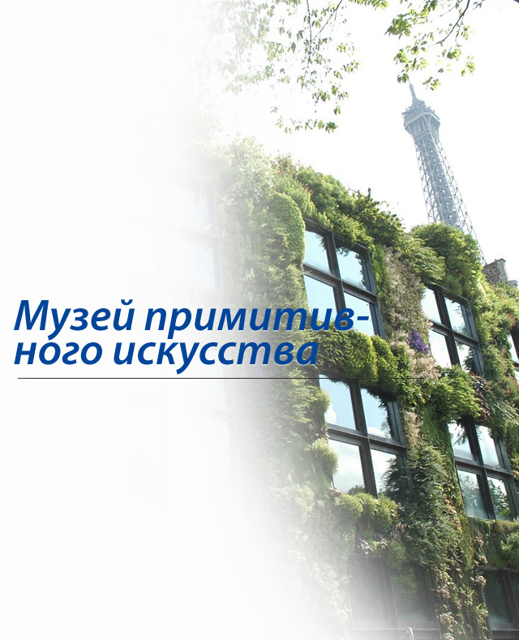

Музей примитивного искусства на набережной Бранли
знаменит прежде всего своим внешним видом. Это – удивительный пример вертикального озеленения, созданный Патриком Бланком, ботаником и дизайнером вертикальных ландшафтов. Он 10 лет учился создавать вертикальные сады, изучил все растения, способные жить в расщелинах и на влажных поверхностях скал и придумал способы, как перенести все это на стены городского здания. И теперь трехэтажное здание, расположенное на набережной Бранли, совсем рядом с Эйфелевой башней, во всю высоту трех своих этажей покрыто настоящим живым ковром из 15 тысяч разновидностей растений, что позволило зданию занять место в списке достопримечательностей Парижа, а разработчику принесло всемирную известность.
Сам же музей никакого отношения к ботанике не имеет – это выставка произведений культуры и искусства Азии, Африки, Океании, Северной и Южной Америки – то, что мы называем «примитивным» искусством, но признаем сокровищами неевропейского мира.
 Музей задуман как учреждение культуры нового образца, не только хранящее коллекции, но и занимающееся исследованиями и образованием. Здесь, в соответствии с тематикой представленных экспозиций, проводятся представления театрального, музыкального и танцевального искусства незападных народов. Музей должен превратиться для посетителей в особое место общения цивилизаций, культур и отдельных людей, в уютный городок внеевропейских народностей. Перед открытием музея на набережной Бранли была проведена беспрецедентная кампания по сохранению экспонатов – 300000 экспонатов очистили, восстановили, инвентаризировали и сфотографировали.
Музей задуман как учреждение культуры нового образца, не только хранящее коллекции, но и занимающееся исследованиями и образованием. Здесь, в соответствии с тематикой представленных экспозиций, проводятся представления театрального, музыкального и танцевального искусства незападных народов. Музей должен превратиться для посетителей в особое место общения цивилизаций, культур и отдельных людей, в уютный городок внеевропейских народностей. Перед открытием музея на набережной Бранли была проведена беспрецедентная кампания по сохранению экспонатов – 300000 экспонатов очистили, восстановили, инвентаризировали и сфотографировали.


Фигурка божества
(Папуа Новая Гвинея,
начало 20 века)
Племена приносили
жертвоприношения
the hook protruding from
this sculpted female figure.

Brass pendant (India, 19–20th century) Topped by three heads, this pendant is associated with headhunting, a tradition once practised by Naga warriors.

Giant headdress (Bolivia) Worn for the Macheteros warrior dance, this colorful headdress weighs almost 22 lb (10 kg).